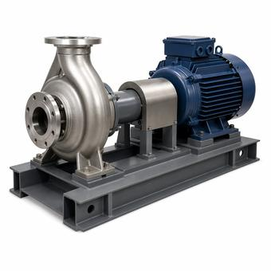

Pump and Fan Affinity Laws Explained
Three proportionalities describe what happens when a pump or a fan changes speed. The third one, power with the cube of speed, is the reason variable speed drives pay for themselves, and also the reason they sometimes do not.

Key takeaways
- Flow changes in proportion to speed, head or pressure with the square of speed, and power with the cube.
- At 80 percent speed a pump or fan delivers 80 percent of the flow for about 51 percent of the power. At 50 percent speed the power is one eighth.
- The cube law holds when the system is all friction. Static head or a fixed pressure setpoint makes the saving smaller, sometimes much smaller.
- The same laws apply to fans, where they are called the fan laws, and they are why running more fans slowly beats running fewer fans fast.
On this page · 7 sections
The three laws
For a given pump or fan, flow is proportional to speed, head is proportional to the square of speed, and power is proportional to the cube of speed. Written out, with N for speed, Q for flow, H for head and P for power:
Q₂ / Q₁ = N₂ / N₁ · H₂ / H₁ = (N₂ / N₁)² · P₂ / P₁ = (N₂ / N₁)³
They follow from one another. Power delivered to a fluid is flow times head, so if flow goes with speed and head with its square, their product goes with the cube. The laws apply to centrifugal pumps and to fans alike, because both are machines that add energy to a fluid by spinning it.
| Speed | Flow | Head or pressure | Power |
|---|---|---|---|
| 100% | 100% | 100% | 100% |
| 90% | 90% | 81% | 73% |
| 80% | 80% | 64% | 51% |
| 70% | 70% | 49% | 34% |
| 60% | 60% | 36% | 22% |
| 50% | 50% | 25% | 12.5% |
The affinity laws calculator works any pair of speeds.
A worked example
A chilled water pump delivers 500 GPM at 80 ft of head and draws 15 hp at 1,750 rpm. The load falls and the system now needs 400 GPM. A drive slows the pump to 80 percent speed, 1,400 rpm:
Flow = 500 × 0.80 = 400 GPM
Head = 80 × 0.80² = 51.2 ft
Power = 15 × 0.80³ = 7.68 hp
The alternative is to leave the pump at full speed and close a valve until the flow drops to 400 GPM. That pushes the pump back up its curve to a higher head, and the valve throws the extra pressure away. The pump still draws most of its 15 hp. The difference between the two, several horsepower running continuously, is what a variable speed drive is bought to save.
Why it works, and when it does not
The laws describe the machine. Where it actually operates is decided by the system it is connected to, and the cube law for power only follows if the system cooperates.
In a closed loop where all the resistance is friction, the pressure needed rises with the square of flow. That is the same shape as the head law, so as the pump slows, the operating point slides down a curve that passes through zero and the pump stays at the same efficiency. This is the case the table describes.
Two common conditions break it. The first is static head: a pump lifting water to a cooling tower, or a booster filling a tank, has to produce a fixed height before any flow happens at all. Slow that pump and the flow falls much faster than the speed, reaching nothing while the pump is still turning. The second is a fixed pressure setpoint. Many variable speed systems are controlled to hold a constant differential pressure somewhere in the piping, or a constant static pressure in a duct. That setpoint behaves like static head. The pump or fan cannot slow below the speed that maintains it, and the energy saving is smaller than the cube law promises.
This is why the location and value of a pressure setpoint matter so much, and why resetting it downward when the load is light recovers savings that a fixed setpoint leaves behind.
Fans, and running more of them
For fans the same three relationships are called the fan laws, with static pressure in the place of head. They lead to a result that seems backwards at first: it takes less energy to run more fans than the load needs, all of them slowly, than to run just enough of them at full speed.
Take a row of cooling units where three fans at full speed deliver the airflow required. Run four at 75 percent speed and the airflow is the same, 4 × 0.75 = 3. But each fan now draws 0.75³ = 42 percent of its full power, so the four together draw 1.69 units of power against 3.0. That is 44 percent less energy for the same air. It works because most of the resistance each fan pushes against is inside its own unit, in the coil and the filters, and that resistance falls with the square of the air passing through it. It is the reason redundant cooling units are run alongside the duty units instead of being held as idle standby.
The same reasoning is behind containment: anything that lets the fans slow down, even a little, is repaid at the cube.
Limits in practice
Speed cannot be reduced without limit. A pump has a minimum flow below which it overheats or runs unstably, and a chiller has a minimum water flow through its evaporator. A motor cooled by a fan on its own shaft loses cooling as it slows. Drives and motors also have losses of their own, a few percent at full speed and a larger share at light load, so the electrical saving is always somewhat less than the saving at the shaft.
The laws also run in the other direction. Running a fan or pump at 110 percent of its speed takes 1.10³ = 133 percent of the power, which can overload a motor that was sized with no margin.
Finally, a version of the laws applies to changing the impeller diameter instead of the speed, which is how a pump is trimmed to suit a system permanently. It is reliable only for small changes in diameter; beyond that the pump's efficiency shifts and the manufacturer's curve for the trimmed impeller is the thing to use.
Common mistakes
- Promising cube-law savings on a system with static head. The saving depends on the system curve, and a pump working mostly against lift saves far less.
- Leaving a high fixed pressure setpoint in place. It acts as static head and caps how far the speed can fall.
- Comparing two different machines. The laws relate one pump or fan to itself at another speed. They do not predict what a different model will do.
- Ignoring minimum flow. Slowing a pump below what the pump or the chiller can tolerate trades an energy saving for a failure.
- Forgetting the laws apply upward. A modest overspeed costs a third more power.
Frequently asked questions
What are the three affinity laws?
For one pump or fan at two speeds: flow is proportional to speed, head or pressure is proportional to the square of speed, and power is proportional to the cube of speed. At 80 percent speed that means 80 percent of the flow, 64 percent of the head and about 51 percent of the power.
How much energy does a variable speed drive save on a pump?
In a closed loop where the resistance is all friction, power falls with the cube of speed, so running at 80 percent speed uses roughly half the power and 50 percent speed uses one eighth. Where the pump works against static head or a fixed pressure setpoint the saving is smaller, and it has to be worked out from the pump curve and the system curve together. Drive losses take a few percent off the result.
Do the affinity laws apply to fans?
Yes. They are called the fan laws: airflow is proportional to speed, static pressure to the square of speed and power to the cube. They are why running four cooling fans at 75 percent speed uses about 44 percent less energy than running three at full speed for the same airflow.
Why does throttling a valve waste energy?
A valve reduces flow by adding resistance. The pump still runs at full speed and moves up its curve to a higher head, and the extra pressure is dissipated across the valve as heat and noise. Slowing the pump produces the lower flow at a lower head, with nothing thrown away.
Next steps
How a drive changes motor speed, and what else it does to a motor circuit, is covered in VFD vs. soft starter. The pumps and cooling units these laws apply to are on the data center cooling reference page.
Run the numbers
- Pump & Fan Affinity Laws CalculatorFlow, head and power at any two speeds.
- Pump Power CalculatorBrake horsepower and motor kW from GPM and head.
- Motor Speed & Slip CalculatorSynchronous speed from frequency and poles.
Cite or link to this guide
Free to quote with attribution. Suggested citation: Voltfield Editorial Team, “Pump and Fan Affinity Laws Explained,” Voltfield, updated November 11, 2026. https://voltfield.org/guide-pump-and-fan-affinity-laws.html
Get new guides by email
One short email when a new guide or calculator is published, at most once a month. Your address is used for nothing else.